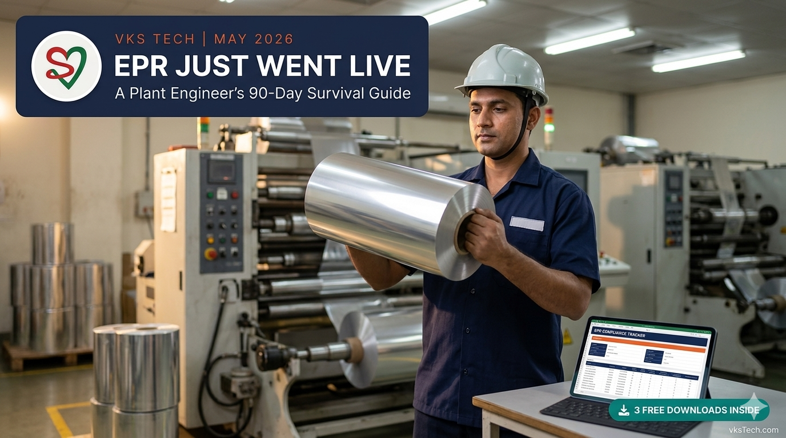
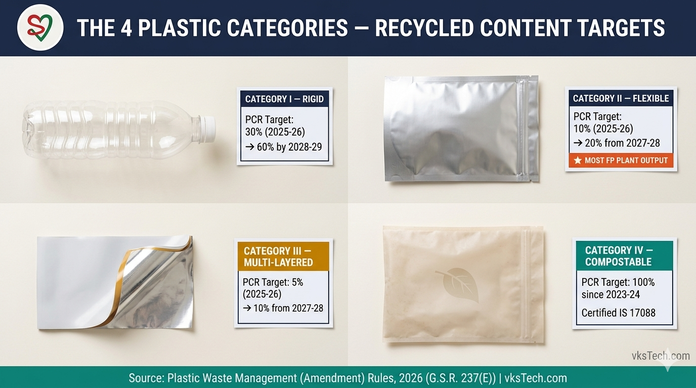
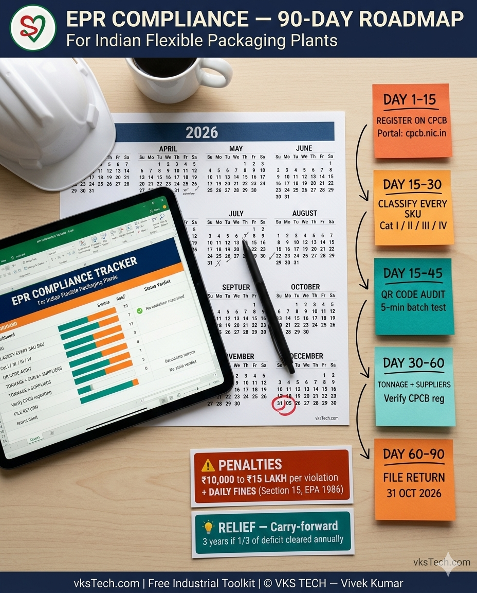
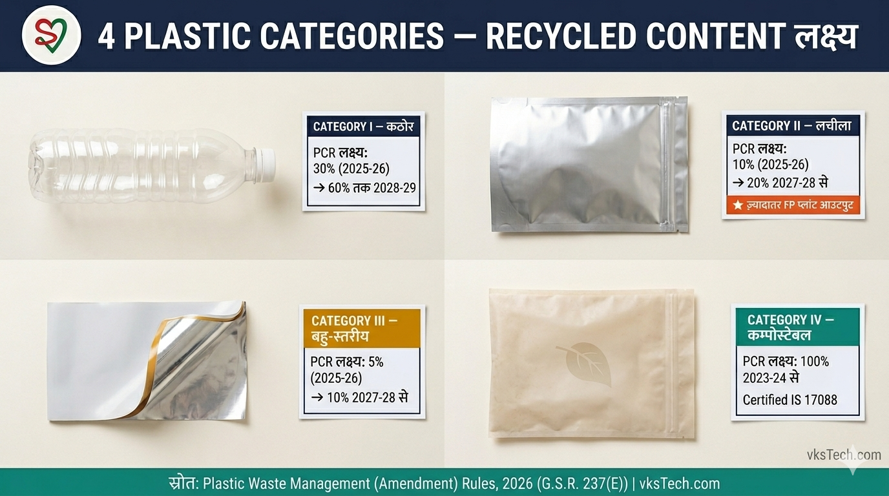

📖 14-min read | The Plastic Waste Management (Amendment) Rules, 2026 are now in force | Includes 3 free downloadable bilingual Excel formats | Published May 2026
On 31 March 2026, the Ministry of Environment, Forest and Climate Change notified the Plastic Waste Management (Amendment) Rules, 2026 in the Gazette of India under notification G.S.R. 237(E). Unlike most regulatory updates that quietly take effect months later, these rules came into force on the date of publication. As of 1 April 2026, every Producer, Importer, and Brand Owner (PIBO) of plastic packaging in India is operating under a new set of binding obligations: mandatory recycled content targets by category, half-yearly returns on the CPCB centralised portal, mandatory QR codes on every plastic package, and tradable EPR certificates. End-of-Life disposal certificates are no longer accepted as proof of compliance. Penalties run from ₹10,000 to ₹15 lakh per violation, with daily fines for continued non-compliance and the potential for operational shutdowns.
If you run a metalliser, slitter, lamination, or printing line in India — or you supply jumbo rolls to a converter who does — these rules affect you. This blog walks you through what changed, what your plant must do in the next 90 days, the four plastic categories and their recycled-content targets, the most common compliance mistakes plants are making, and three free downloadable bilingual Excel formats you can use to track everything from SKU classification to QR code scannability. Fourteen minutes. After this you will know exactly what to file, when to file, and how to avoid the ₹15 lakh penalty bullet.
The Plastic Waste Management Rules of 2016 introduced the original framework. The 2022 amendment introduced the EPR (Extended Producer Responsibility) regime that you have already heard about for three years. The 2026 amendment is different in shape — it is the most operationally consequential update to date because it stops being aspirational and starts being binding.
Three things are new. First, recycled content targets are now mandatory and category-specific. Before 31 March, recycled content was a "good to have" — brand owners could meet EPR obligations primarily through collection and end-of-life processing certificates. Now, according to the amended rules, you must demonstrate that a specific percentage of your packaging contains recycled material, with the percentages varying by category and increasing every year through 2028-29. Second, end-of-life (EOL) disposal certificates — co-processing in cement plants, waste-to-energy, road construction — are no longer accepted as proof of recycling compliance. Only certificates from CPCB-registered actual recyclers count. Third, a tradable EPR certificate market is being formalised: companies that exceed their targets can sell certificates to companies that fall short. This is good news if you are over-compliant, but it also means the price of a certificate is now a market-discovered number that fluctuates with supply and demand.
The carry-forward provision is the one piece of relief. If you miss your 2025-26 target, you have up to three years to make it up — but only if you clear at least one-third of the deficit each year. This is a softening of an otherwise hard regulatory edge, and it gives plants that are scrambling to set up supply chains a runway. The carry-forward does not waive the penalty for the year you missed; it only avoids escalation. Use this as a buffer, not as a substitute for a real plan.

Every plastic package put into the Indian market falls into one of four categories. Getting this classification right is the single most important compliance decision your plant will make, because the recycled content target you must hit depends entirely on which category your SKU lands in.
Category I — Rigid plastic packaging covers bottles, jars, rigid containers, caps, and trays. Most rigid packaging is PET (water bottles, oil bottles) or HDPE (shampoo bottles, milk jugs). The recycled content target is 30% for FY 2025-26, rising to 40% in 2026-27, 50% in 2027-28, and reaching 60% by 2028-29. India already has a relatively mature mechanical recycling infrastructure for PET and HDPE, which is why Category I targets are higher than the others — the recyclers exist, the supply is there, the obligation can be met. The challenge is meeting it without compromising film properties: mechanically recycled PET starts to introduce gels and a yellowish tinge above 30% content, which is why most converters cap mechanical r-PET at 30% and use chemically recycled r-PET (more expensive, near-virgin quality) for higher percentages.
Category II — Flexible plastic packaging covers films, pouches, sachets, carry bags, wraps, and the entire output of a typical metalliser, slitter, or extrusion plant. This is where most VKS Tech readers will spend their compliance attention. The recycled content target is 10% for FY 2025-26, stays at 10% for 2026-27, and then rises to 20% from 2027-28 onwards. Why is the target lower than Cat I? Because the recycling infrastructure for flexible films is much weaker — flexible plastics below 75 microns are hard to collect, low-value to recyclers, and almost entirely absent from formal collection channels in India. The 10% target acknowledges this constraint while still pushing the industry toward investment in flexible film recycling.
Category III — Multi-layered plastic packaging covers laminates that combine plastic with non-plastic layers — typically PET-Met-PE structures with aluminium foil layers, or paper-PE laminates used in flexible cartons. These are the structures that brand owners reach for when barrier requirements are extreme (pharmaceutical blisters, ghee, ground spices), and they are also the hardest to recycle because separation of layers is mechanically and economically difficult. The recycled content target reflects this: 5% in 2025-26, 5% in 2026-27, 10% from 2027-28 onwards. This is the category most affected by the global push toward mono-material structures, because every multi-layered SKU is now a candidate for redesign into a Cat II mono-PE or mono-PP structure.
Category IV — Compostable plastic packaging covers plastics certified compostable under IS 17088. The target has been 100% since FY 2023-24 — meaning every kilogram of compostable plastic put into the market must be matched by a kilogram of compostable plastic processed at end of life. The advantage of Cat IV is that it sidesteps the recycled content trap entirely; the disadvantage is that compostable plastics typically cost more per kilogram, have shorter shelf life, and have limited barrier properties. Cat IV makes sense for cutlery, single-use sachets in organic food contexts, and certain agricultural films — but for most metalliser output, it is not yet a practical alternative.
One important exemption: where the use of recycled plastic is prohibited by law (FSSAI for food contact, Central Drugs Standard Control Organisation for pharma, Central Insecticide Board for pesticides), the recycled content target does not apply. But the exemption must be declared explicitly in your annual return — you cannot simply skip the target without a declaration.

The rules are in force. Inspections will follow. Here is the priority sequence I would walk a plant through in the next 90 days, ordered by what protects you fastest.
Day 1-15: Register on the CPCB EPR portal. If your plant is a Producer (manufactures plastic packaging), Importer (brings in plastic packaging from outside India), or Brand Owner (owns the brand under which packaging is sold) you must register. The portal is at cpcb.nic.in. Registration is free but requires Certificate of Incorporation, GST registration, last 3 years of plastic packaging tonnage data, and CPCB authorisation letters where applicable. There is no minimum turnover exemption — even a small converter selling 5 tonnes of pouches a year is covered.
Day 15-30: Classify every SKU you produce. Every product code in your master must be tagged with its EPR Category (I/II/III/IV). For most metalliser plants, the categorisation is straightforward: a metallised PET roll is Cat II Flexible, a PET-Met-PE laminate pouch is Cat III Multi-layered. But the edge cases matter. A 75-micron threshold separates "flexible" from some sub-categories of rigid packaging. A metallised film with a heavy paper laminate could be Cat III rather than Cat II depending on plastic content by weight. The downloadable EPR Compliance Master Tracker (Format 1 below) has a SKU Classifier tab with a decision-tree dropdown — fill it in once, and your category mapping is locked.
Day 15-45: Audit your QR code printing. Mandatory QR codes / barcodes on every plastic package have been in force since 1 July 2025. If your plant is not already printing them on every roll — with the resin code, thickness in microns, and manufacturer details encoded — you are already non-compliant and accumulating risk. The QR Code Specification Sheet (Format 3 below) gives you the technical print specs (size, position on roll, error correction level, scannability test method) and a 5-minute batch test you should run after every plate change. CPCB inspectors arrive with smartphones and scan random samples; codes that do not decode are treated as missing codes.
Day 30-60: Set up monthly tonnage tracking. Production data by SKU exists in your ERP. Production data aggregated by EPR Category does not yet — most plants have to build this by mapping ERP data to the EPR classification table. The Monthly Tonnage Tracker tab in Format 1 does this calculation automatically once you fill in monthly category-wise tonnage. The output is your EPR obligation in tonnes — the amount of recycled material you must source or for which you must purchase certificates.
Day 30-60: Identify and onboard recycled content suppliers. Two pathways exist. Pathway one: physically incorporate recycled material into your film. For PET this means sourcing 30% mechanically recycled r-PET from suppliers who are CPCB-registered and FSSAI-approved (where food contact applies). For BOPP, CPP, and PE, the recycled content options are still emerging. Pathway two: purchase EPR certificates from CPCB-registered recyclers. The certificate represents recycled tonnage that someone else has processed; you buy the right to count it against your obligation. Most plants will use a hybrid — physical recycled content where suppliers exist, certificates to close the gap. The Recycling Credit Log (Tab 3 of Format 1) is the audit trail you need to retain for inspection.
Day 60-90: Prepare for the first half-yearly return. The first return covering April-September 2026 is due 31 October 2026. The CPCB portal asks for: total plastic packaging tonnage by category, recycled content claimed (with supplier certificates as proof), EPR certificates purchased (with vendor IDs and certificate numbers), and any exemption declarations. The Filing Checklist (Tab 4 of Format 1) walks you through every field. Start the filing two weeks before the deadline, not two days — the portal gets congested in the last 72 hours and submission failures are common.
1. Treating EPR registration as a one-time exercise. Several plants register, file once, and assume compliance is achieved. EPR is a continuing obligation — half-yearly returns, annual returns, monthly tonnage updates if you change production volumes significantly, supplier certificate uploads, and category re-classification when product portfolios shift. The Filing Checklist has 12 distinct activities, only one of which (initial registration) is one-time. The other 11 recur indefinitely.
2. Buying EPR certificates without verifying the recycler. A market for certificates has formed. With a market comes fraud. The Central Pollution Control Board found over six lakh fake certificates in 2023, and the 2026 amendment specifically tightens vendor verification requirements. Before paying any vendor for an EPR certificate, verify their CPCB registration on the centralised portal. The Recycling Credit Log (Tab 3 of Format 1) has a CPCB Reg No column — if a vendor cannot provide one, do not buy from them. The certificate may technically arrive but will not stand up to inspection.
3. Confusing recycled content with EOL processing. Many plants still believe that sending waste to a cement plant for co-processing or to a waste-to-energy facility counts as "recycling." It does not, under the 2026 amendment. EOL disposal certificates are no longer accepted as proof of recycled content compliance. Only certificates from CPCB-registered recyclers — entities that mechanically or chemically recycle plastic into new feedstock — count. If your current waste management vendor sends to a cement plant, that vendor's certificates are no longer compliant; you need to source from an actual recycler.
All three formats are fully editable Excel files (.xlsx) with English and Hindi side-by-side. All formulas pre-built and verified. Full VKS Tech branding on every page (logo + website + tagline + footer) so your team and your suppliers know where the tool came from.
📚 Related reads on this site: Blog #31 compares AlOx vs Metallised PET through the EPR lens — why the choice between them is now a regulatory decision, not just a technical one. Blog #33 explains the four core reasons to metallise — useful context if your brand customer is asking whether your metallised structures qualify as Cat II or Cat III. The full free toolkit is at vkstech.com/#tools.
EPR rules in India change frequently — clarifications, FAQs, and supplementary guidelines are issued by CPCB on an ongoing basis. The Excel formats and the content above are working tools and starting points, not legal advice. Always verify the latest version of the rules and the current CPCB filing requirements at cpcb.nic.in/rules-4/ and consult your environmental compliance officer or a registered environment auditor before final filing.
Working through EPR registration and hitting a snag? Not sure how to classify a multi-layered structure with paper + foil + plastic? Need help building your supplier audit trail? Drop your question in the comments at the bottom of this page — I respond to every thoughtful question, plant engineer to plant engineer.
📌 What's next. Now that compliance scaffolding is in place, the natural next blog covers where recycled content actually fits in a metalliser line — how much mechanically recycled r-PET your machine can run before you hit the gel and yellow-tinge ceiling, and where chemically recycled material outperforms. That is Blog 42, coming next.
📖 14-min read | Plastic Waste Management (Amendment) Rules, 2026 अब लागू हैं | 3 Free Downloadable Bilingual Excel Formats शामिल | May 2026 में published
31 मार्च 2026 को, Ministry of Environment, Forest and Climate Change ने Plastic Waste Management (Amendment) Rules, 2026 को Gazette of India में notification G.S.R. 237(E) के तहत notify किया। ज़्यादातर regulatory updates कुछ महीनों बाद चुपचाप effect में आते हैं, पर ये rules publication की तारीख से ही लागू हो गए। 1 अप्रैल 2026 से, India में plastic packaging के हर Producer, Importer, और Brand Owner (PIBO) को नए binding obligations के तहत operate करना है: category-wise mandatory recycled content targets, CPCB centralised portal पर अर्धवार्षिक returns, हर plastic package पर mandatory QR codes, और tradable EPR certificates। End-of-Life disposal certificates अब compliance proof के रूप में accept नहीं होते। Penalties ₹10,000 से ₹15 लाख प्रति violation तक हैं, continuing non-compliance पर daily fines, और operational shutdowns की संभावना भी है।
अगर आप India में metalliser, slitter, lamination, या printing line चलाते हैं — या किसी converter को jumbo rolls supply करते हैं जो ये करता है — ये rules आप पर लागू होते हैं। ये blog आपको बताता है कि क्या बदला, अगले 90 दिनों में आपके plant को क्या करना है, चार plastic categories और उनके recycled content targets, सबसे common compliance mistakes plants कर रहे हैं, और तीन free downloadable bilingual Excel formats जिन्हें आप SKU classification से QR code scannability तक track करने के लिए use कर सकते हैं। चौदह मिनट। इसके बाद आपको पता होगा कि क्या file करना है, कब file करना है, और ₹15 लाख की penalty से कैसे बचना है।
Plastic Waste Management Rules of 2016 ने original framework introduce किया। 2022 amendment ने EPR (Extended Producer Responsibility) regime लाया जिसके बारे में आप तीन साल से सुन रहे हैं। 2026 amendment अलग shape का है — ये अब तक का सबसे operationally consequential update है क्योंकि ये aspirational से binding हो गया है।
तीन चीज़ें नई हैं। पहली, recycled content targets अब mandatory और category-specific हैं। 31 मार्च से पहले, recycled content "good to have" था — brand owners मुख्य रूप से collection और end-of-life processing certificates से EPR obligations meet कर सकते थे। अब, amended rules के अनुसार, आपको दिखाना है कि आपकी packaging के एक specific percentage में recycled material है, percentages category-wise अलग हैं और 2028-29 तक हर साल बढ़ते हैं। दूसरी, end-of-life (EOL) disposal certificates — cement plants में co-processing, waste-to-energy, road construction — अब recycling compliance proof के रूप में accept नहीं होते। केवल CPCB-registered actual recyclers के certificates count करते हैं। तीसरी, tradable EPR certificate market formalise हो रहा है: targets exceed करने वाली companies कम पड़ने वालों को certificates बेच सकती हैं। ये अच्छी खबर है अगर आप over-compliant हैं, पर इसका मतलब ये भी है कि certificate की कीमत अब market-discovered number है जो supply-demand से fluctuate करती है।
Carry-forward provision अकेली राहत है। अगर आप 2025-26 का target miss करते हैं, आपके पास तीन साल हैं इसे पूरा करने के लिए — पर तभी जब हर साल कम-से-कम एक-तिहाई deficit clear हो। ये एक otherwise hard regulatory edge की softening है, और जो plants supply chains set up करने में जूझ रहे हैं उन्हें runway देती है। Carry-forward miss हुए साल की penalty waive नहीं करती; ये केवल escalation को avoid करती है। इसे buffer के रूप में use करें, real plan के substitute के रूप में नहीं।

Indian market में डाला गया हर plastic package चार categories में से एक में आता है। ये classification सही पाना आपके plant का सबसे important compliance decision है, क्योंकि जो recycled content target आपको hit करना है वो पूरी तरह आपकी SKU की category पर depend करता है।
Category I — Rigid plastic packaging bottles, jars, rigid containers, caps, और trays cover करता है। ज़्यादातर rigid packaging PET (water bottles, oil bottles) या HDPE (shampoo bottles, milk jugs) है। Recycled content target FY 2025-26 के लिए 30% है, 2026-27 में 40%, 2027-28 में 50%, और 2028-29 तक 60% तक पहुँचता है। India में PET और HDPE के लिए mature mechanical recycling infrastructure पहले से है, इसलिए Category I targets दूसरों से ज़्यादा हैं — recyclers मौजूद हैं, supply है, obligation पूरी हो सकती है। Challenge है इसे film properties compromise किए बिना meet करना: mechanically recycled PET 30% content से ऊपर gels और yellowish tinge introduce करना शुरू करता है, इसलिए ज़्यादातर converters mechanical r-PET को 30% पर cap करते हैं और higher percentages के लिए chemically recycled r-PET (महँगा, near-virgin quality) use करते हैं।
Category II — Flexible plastic packaging films, pouches, sachets, carry bags, wraps, और एक typical metalliser, slitter, या extrusion plant का पूरा output cover करता है। यहाँ ज़्यादातर VKS Tech readers अपना compliance attention लगाएँगे। Recycled content target FY 2025-26 के लिए 10% है, 2026-27 के लिए 10% रहता है, और फिर 2027-28 से 20% तक बढ़ता है। Target Cat I से कम क्यों है? क्योंकि flexible films के लिए recycling infrastructure बहुत weaker है — 75 microns से नीचे flexible plastics collect करना hard है, recyclers के लिए low-value, और India में formal collection channels से लगभग गायब। 10% target इस constraint को acknowledge करता है जबकि industry को flexible film recycling में investment की तरफ़ push करता है।
Category III — Multi-layered plastic packaging ऐसे laminates cover करता है जो plastic को non-plastic layers के साथ combine करते हैं — typically PET-Met-PE structures aluminium foil layers के साथ, या paper-PE laminates flexible cartons में use। ये वो structures हैं जिन्हें brand owners तब reach करते हैं जब barrier requirements extreme हों (pharmaceutical blisters, ghee, ground spices), और ये सबसे hard recycle भी हैं क्योंकि layers की separation mechanically और economically difficult है। Recycled content target ये reflect करता है: 2025-26 में 5%, 2026-27 में 5%, 2027-28 से 10%। ये category mono-material structures के global push से सबसे ज़्यादा affected है, क्योंकि हर multi-layered SKU अब Cat II mono-PE या mono-PP structure में redesign का candidate है।
Category IV — Compostable plastic packaging IS 17088 के तहत certified compostable plastics cover करता है। FY 2023-24 से target 100% रहा है — मतलब market में डाले गए हर kilogram compostable plastic को end of life पर processed compostable plastic के kilogram से match होना चाहिए। Cat IV का advantage ये है कि ये recycled content trap को पूरी तरह sidestep करता है; disadvantage ये कि compostable plastics typically per kilogram ज़्यादा cost करते हैं, shorter shelf life होती है, और limited barrier properties होती हैं। Cat IV cutlery, organic food contexts में single-use sachets, और कुछ agricultural films के लिए सही है — पर ज़्यादातर metalliser output के लिए, ये अभी practical alternative नहीं है।
एक important exemption: जहाँ recycled plastic का use कानून से prohibited है (FSSAI food contact के लिए, Central Drugs Standard Control Organisation pharma के लिए, Central Insecticide Board pesticides के लिए), वहाँ recycled content target apply नहीं होता। पर exemption को annual return में explicitly declare करना है — आप simply target skip नहीं कर सकते बिना declaration के।
Rules लागू हैं। Inspections होंगे। मैं अगले 90 दिनों में एक plant को जिस priority sequence से walk करूँगा, यहाँ है, उस order में जो आपको सबसे fast protect करता है।
Day 1-15: CPCB EPR portal पर register करें। अगर आपका plant Producer (plastic packaging manufacture करता है), Importer (India के बाहर से plastic packaging लाता है), या Brand Owner (वो brand जिसके तहत packaging बेची जाती है) है तो आपको register करना है। Portal cpcb.nic.in पर है। Registration free है पर इसके लिए Certificate of Incorporation, GST registration, last 3 years का plastic packaging tonnage data, और जहाँ applicable हो CPCB authorisation letters चाहिए। कोई minimum turnover exemption नहीं — एक छोटा converter जो साल में 5 tonnes pouches बेचता है वो भी covered है।
Day 15-30: हर SKU जो आप produce करते हैं उसे classify करें। आपके master में हर product code को EPR Category (I/II/III/IV) tag होनी चाहिए। ज़्यादातर metalliser plants के लिए, categorisation straightforward है: एक metallised PET roll Cat II Flexible है, PET-Met-PE laminate pouch Cat III Multi-layered है। पर edge cases matter करते हैं। 75-micron threshold "flexible" को rigid packaging के कुछ sub-categories से separate करता है। एक heavy paper laminate वाला metallised film weight by plastic content के हिसाब से Cat III हो सकता है Cat II के बजाय। Downloadable EPR Compliance Master Tracker (नीचे Format 1) में decision-tree dropdown के साथ SKU Classifier tab है — एक बार fill करें, और आपकी category mapping locked है।
Day 15-45: अपनी QR code printing audit करें। हर plastic package पर mandatory QR codes / barcodes 1 जुलाई 2025 से लागू हैं। अगर आपका plant पहले से हर roll पर print नहीं कर रहा — resin code, thickness microns में, और manufacturer details encoded के साथ — आप पहले से non-compliant हैं और risk accumulate कर रहे हैं। QR Code Specification Sheet (नीचे Format 3) technical print specs देता है (size, position on roll, error correction level, scannability test method) और 5-मिनट का batch test जो आपको हर plate change के बाद run करना चाहिए। CPCB inspectors smartphones के साथ आते हैं और random samples scan करते हैं; जो codes decode नहीं होते वो missing codes की तरह treat होते हैं।
Day 30-60: Monthly tonnage tracking set up करें। SKU-wise production data आपके ERP में है। EPR Category से aggregate production data अभी नहीं है — ज़्यादातर plants को इसे ERP data को EPR classification table से map करके build करना है। Format 1 का Monthly Tonnage Tracker tab ये calculation automatically करता है जब आप category-wise मासिक tonnage भरते हैं। Output है आपकी EPR obligation tonnes में — recycled material की मात्रा जो आपको source करनी है या जिसके लिए certificates खरीदने हैं।
Day 30-60: Recycled content suppliers identify और onboard करें। दो pathways हैं। Pathway one: physically अपनी film में recycled material incorporate करें। PET के लिए इसका मतलब है CPCB-registered और FSSAI-approved (जहाँ food contact apply हो) suppliers से 30% mechanically recycled r-PET source करना। BOPP, CPP, और PE के लिए, recycled content options अभी emerge हो रहे हैं। Pathway two: CPCB-registered recyclers से EPR certificates खरीदें। Certificate represent करता है किसी और के process किए recycled tonnage; आप right खरीदते हैं इसे अपनी obligation के against count करने का। ज़्यादातर plants hybrid use करेंगे — physical recycled content जहाँ suppliers हैं, certificates gap close करने के लिए। Recycling Credit Log (Format 1 का Tab 3) audit trail है जो आपको inspection के लिए retain करनी है।
Day 60-90: पहले अर्धवार्षिक return के लिए prepare करें। April-September 2026 cover करने वाला पहला return 31 अक्टूबर 2026 को due है। CPCB portal माँगता है: category-wise total plastic packaging tonnage, recycled content claimed (supplier certificates proof के साथ), EPR certificates खरीदे गए (vendor IDs और certificate numbers के साथ), और कोई exemption declarations। Filing Checklist (Format 1 का Tab 4) हर field के through walk करता है। Filing deadline से दो हफ़्ते पहले शुरू करें, दो दिन पहले नहीं — last 72 hours में portal congested हो जाता है और submission failures common हैं।
1. EPR registration को one-time exercise मानना। कई plants register करते हैं, एक बार file करते हैं, और मानते हैं compliance achieved है। EPR continuing obligation है — अर्धवार्षिक returns, annual returns, monthly tonnage updates अगर production volumes significantly बदलते हैं, supplier certificate uploads, और product portfolios shift होने पर category re-classification। Filing Checklist में 12 distinct activities हैं, जिनमें से केवल एक (initial registration) one-time है। बाकी 11 indefinitely recur होती हैं।
2. Recycler verify किए बिना EPR certificates खरीदना। Certificates का market बन गया है। Market के साथ fraud आता है। Central Pollution Control Board ने 2023 में छह लाख से ज़्यादा fake certificates पाए, और 2026 amendment specifically vendor verification requirements tighten करता है। किसी भी vendor को EPR certificate के लिए payment करने से पहले, उनकी CPCB registration centralised portal पर verify करें। Recycling Credit Log (Format 1 का Tab 3) में CPCB Reg No column है — अगर vendor एक provide नहीं कर सकता, उनसे मत खरीदें। Certificate technically arrive कर सकता है पर inspection में stand नहीं करेगा।
3. Recycled content को EOL processing के साथ confuse करना। कई plants अभी भी मानते हैं कि cement plant में co-processing या waste-to-energy facility को waste भेजना "recycling" count होता है। 2026 amendment के तहत नहीं। EOL disposal certificates अब recycled content compliance proof के रूप में accept नहीं होते। केवल CPCB-registered recyclers के certificates — entities जो mechanically या chemically plastic को new feedstock में recycle करते हैं — count करते हैं। अगर आपका current waste management vendor cement plant भेजता है, उस vendor के certificates अब compliant नहीं हैं; आपको actual recycler से source करना है।
तीनों formats fully editable Excel files (.xlsx) हैं English और Hindi side-by-side के साथ। सभी formulas pre-built और verified। हर page पर full VKS Tech branding (logo + website + tagline + footer) ताकि आपकी team और suppliers जानें कि tool कहाँ से आया।
📚 इस site पर related reads: Blog #31 AlOx vs Metallised PET की तुलना EPR lens से करता है — दोनों के बीच choice अब regulatory decision है, सिर्फ़ technical नहीं। Blog #33 चार core reasons explain करता है क्यों metallise करें — useful context अगर आपका brand customer पूछ रहा है कि metallised structures Cat II के रूप में qualify होती हैं या Cat III। Full free toolkit vkstech.com/#tools पर है।
India में EPR rules बार-बार बदलते हैं — clarifications, FAQs, और supplementary guidelines CPCB ongoing basis पर issue करता है। ऊपर के Excel formats और content working tools और starting points हैं, legal advice नहीं। Final filing से पहले हमेशा rules का latest version और current CPCB filing requirements cpcb.nic.in/rules-4/ पर verify करें और अपने environmental compliance officer या registered environment auditor से consult करें।
EPR registration में snag hit हुआ? Multi-layered structure paper + foil + plastic को classify नहीं कर पा रहे? Supplier audit trail build करने में help चाहिए? अपना सवाल इस page के bottom पर comments में डालें — मैं हर thoughtful question का जवाब देता हूँ, plant engineer to plant engineer।
📌 आगे क्या। अब जब compliance scaffolding जगह पर है, अगला natural blog cover करता है कि recycled content actually metalliser line में कहाँ fit होता है — आपकी मशीन कितना mechanically recycled r-PET run कर सकती है gel और yellow-tinge ceiling hit करने से पहले, और chemically recycled material कहाँ outperform करता है। ये Blog 42 है, अगला आ रहा है।